Operating Documentation
Direction 5133330-3, Rev# 14
Signa EXCITE HD 3.0T Service Methods
Module Version 1.0, Version Date 3/20/07
Operating Documentation |
This manual is for the servicing of the hardware components used for the GE BrainWaveHW Lite Option.
The components listed in Table 1, Table 2, Table 3, Table 4, Table 5, Table 6, andTable 7 are shipped as part of the product.
Table 1: BrainWave Cabinet Shipping List
| Component | Qty | GE P/N |
|---|---|---|
| [Cedrus] Lumina Response Controller Box | 1 | 2394034-6 |
| [Cedrus] AC Power module for Lumina response controller box | 1 | 2394034-7 |
| 5-foot VGA Cable | 1 | n/a (part of 15-inch LCD Display 2363727) |
| AC Power Cable for 15-inch LCD Display | 1 | n/a (part of 15-inch LCD Display 2363727) |
| Stimulus Computer (PC), including AC power cord | 1 | 2303343-2 |
| Power strip | 1 | 2394034-11 |
Table 2: Box 1: LCD Display
| Component | Qty | GE P/N |
|---|---|---|
Illustration 1: LCD Display (15-inch) 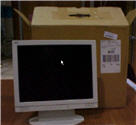 | 1 |
Table 3: Box 2: Shielded Cable
| Component | Qty | GE P/N |
|---|---|---|
Illustration 2: 65-foot (30m) Shielded Cable, to be used inside of the Magnet Room (penetration sub-panel to OTEC unit). 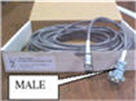 | 1 | Part of 2394034-9 Cable Kit |
Table 4: Box 3: Shielded Cable
| Component | Qty | Avotec P/N | GE P/N |
|---|---|---|---|
Illustration 3: 65-foot (30m) Shielded Cable, to be used outside the Magnet Room (penetration sub-panel to Cedrus Lumina Response Pad in the BrainWave Cabinet). 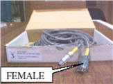 | 1 | 758620 | Part of 2394034-9 Cable Kit |
Table 5: Box 4: Response Pads, Fiber Cables, OTEC Unit
| Component | Qty | GE P/N |
|---|---|---|
Illustration 4: R/L Response Pads/Fiber Optic Cable/OTEC Unit Assembly, to be used inside the Magnet Room. 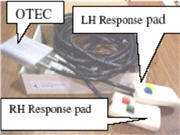 | 1 | Part of 2394034-9 Cable Kit |
Table 6: Box 5: PC Compatible Keyboard
| Component | Qty | GE P/N |
|---|---|---|
Illustration 5: PC Compatible Keyboard to be used with the Stimulus PC in the BrainWave Cabinet. 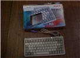 | 1 | 2394034-16 |
Table 7: Box 6: Sub-Panel and Other Components
| Component | Qty | GE P/N |
|---|---|---|
| Bulkhead Threaded Clips | 2 | 46-265067P1 |
| Y-Trigger Cable | 1 | 2394034-8 |
| Penetration Sub-Panel Assembly | 1 | 2394034-10 |
| PC Compatible Mouse | 1 | 2394034-17 |
| Network Cable (75-ft) | 1 | 2394034-18 |
| Adhesive Mount Folder | 1 | n/a |
| Headphones (not shown) | 1 |
Illustration 6: Sub-Panel
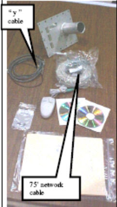
This hardware is compatible with the following hardware:
Signa NV/i 1.5T
Signa 3.0T
Functional Magnetic Resonance Imaging (fMRI) consists of single-shot Echo Planar Imaging (EPI) pulse sequences, used in conjunction with clinical paradigms to visualize signal intensity changes during task activation. The BrainWave software is also used to accomplish this type of examination. With these key elements working simultaneously, images are produced and post-processed into color maps. The color maps display the intensity levels where the task activation has occurred. The final product is commonly known as Brain Mapping.
The acquisition and detection of relative changes in the MR signal over time are believed to be tightly coupled to changes in neuronal activity.
BrainWave hardware interaction with system
The system cabinet will send a trigger pulse to the BrainWave Stimulus PC in the BrainWave Cabinet during the acquisition of a brainwave (or fMRI) scan to indicate patient stimulation. The Response Pads in the scan room have two purposes:
Verifies that the patient is responding to the audio/visual stimulation when asked.
Can generate patient motor activity by pressing buttons.
Illustration 7: Block Diagram
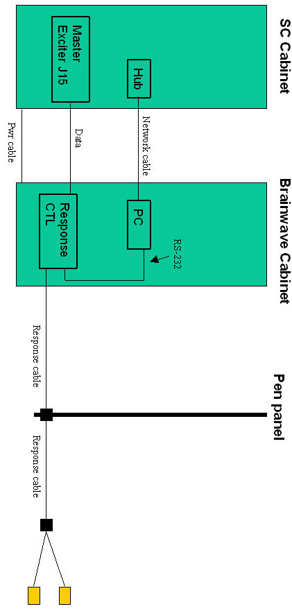
Play audio from the Stimulus PC by either running the test calibration paradigm (it is not continuous), play a CD, or run a WAV file continuously.
Check computer-generated audio input signal with PC test headphones. If audio signal is bad, troubleshoot PC (check balance settings and Mute checkbox).
Check the connections of the monitor to the Stimulus PC.
The monitor should be connected to the Stimulus PC by VGA cable to the VGA port on the expansion card (NOT the VGA connector on the motherboard). Any third-party video equipment should also be connected to the expansion card.
Check the PC audio with the PC headset. If audio signal is low, adjust the volume using the PC software controls.
Press the Response Pad buttons in the magnet room, and have an independent observer at the BrainWave Cabinet observe the R/G/B/Y LEDs on the Response Interface box respond accordingly. If not, check that power is reaching the Response Interface box from the cabinet power strip. Also check that the response fiber optic cable is properly connected at the Response Interface box and the Response Pad assembly, as well as at the mating connection. See Illustration 10. This will verify continuity between response pad and controller. If LEDs do not light, check cabling between response pad in magnet room and controller in Brainwave cabinet.
Open Windows Explorer. Navigate to C:\Program Files\Sensor Systems\NeuroActivator 1.050W. Double-click commtest.exe.
A window will appear. Press the four response pad buttons in the magnet room. The following numerical values should appear
Blue: number 49
Yellow: number 50
Green: number 51
Red: number 52
This verifies communication from response pad in magnet room, through controller box, then to Stimulus PC. If there is no response on the PC, and Section 2.4.1, Step 1 is fine, check cabling between Control Box and PC. Verify serial cable on the Stimulus PC is connected to the motherboard. See Illustration 8.
Illustration 8: Serial Port Location
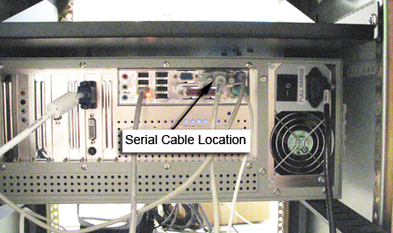
Open Windows Explorer. Navigate to C:\Program Files\Sensor Systems\NeuroActivator 1.050W. Double-click commtest.exe.
A window will appear.
Set up for an FMRI scan using the following parameters:
Patient Position: Supine
Patient Entry : Head first
Coil: Standard Head coil
Plane: Axial plane
Mode: 2D
Pulse Sequence: Gradient Echo EPI
Select fMRI imaging option.
Click on the fMRI Screen (see Illustration 12) in the middle of the monitor and enter the parameters noted in Illustration 9. Select [Accept] when done.
Illustration 9: 11.x and 12.x fMRI Parameters

Click [Auto Pre-Scan]. When the pre-scan is complete, click [Scan]. Scan Time marks the time remaining in the scan.
After the scan is complete, check the output from the communication test. You should see:
A new pulse received number is 53
This verifies communication between the System Cabinet and the Stimulus PC.
The outputs from the Response Pads and the system trigger from the System Cabinet are routed through the Response System Electronics and then to the serial port of the Stimulus PC.
If the BrainWave hardware does not receive the trigger from the System Cabinet, the paradigms will not go past the ready state.
Run the Serial Port Test (commtest.exe) on the Stimulus PC and check the inputs from the Response Pads (have someone push the buttons) and the system trigger (run a test BrainWave acquisition from the AW to start the trigger).
Signals from Response Pads will be numbers 49-52.
Signal from the system trigger will be number 53.
The Response Electronics may get hung up, try cycling the power.
If response or trigger signals are not present, trace the signals using the interconnect diagram back through the Response Electronics.
| NOTE: | To stop the NeuroActivator and keep the screen from constantly
displaying the 4 color boxes, right click on the NeuroActivator icon
on the Start bar and select [Exit]. To re-start
NeuroActivator, move the mouse to the lower left corner of the screen,
click Start
→
Programs
→
NeuroActivator
→
NeuroActivator
- Clinical. The signals are sent through pins 4 and 9 of the DB-9 connector on J31 of the Tyme II board. |
Press the Response Pad buttons in the Magnet Room, and have an independent observer at the BrainWave Cabinet observe the R/G/B/Y LEDs on the Response Interface box respond accordingly. If not, check that power is reaching the Response Interface box from the cabinet power strip. Also check that the response fiber optic cable is properly connected at the Response Interface box and the Response Pad assembly, as well as at the mating connection. See Illustration 10. This will verify continuity between response pad and controller. If LEDs do not light, check cabling between response pad in Magnet Room and controller in BrainWave cabinet.
Illustration 10: Generating Responses from the Lumina Controller

Finally, check the serial cable from the Lumina Controller to the Stimulus PC. The Lumina Controller Box should be connected with a cable to a serial port (DB-9) on the right side of the Stimulus PC's motherboard. If the cable is attached to the expansion slot on the PC labeled serial, move it to the proper location.
Move the mouse to the lower left corner of the Stimulus PC screen. Click Start → Run.
From the command line window, type hypertrm.exe and <Enter>.
If a HyperTerminal communication link has been set up, click [Cancel], then select the link by clicking File, then Open, then double-click on [Cedrus_Test]. Proceed to step 6.
If a HyperTerminal communication link has not been set up for this site, Type cedrus_test in the Name field and click [OK]. Proceed with Steps 4 and 5.
In the Connect Using field, select COM1. Click [OK].
In Port Settings, select the following:
Bits per Second: 9600
Data Bits: 8 (default)
Parity: None (default)
Stop Bits: 1 (default)
Flow Control: None
Click [OK]. A Connected message should appear in the lower left corner of the screen.
Press the 4 different Response Pad buttons, and verify that the proper values are displayed.
These numbers will be displayed in the HyperTerminal window when you press each button:
Blue = 1
Yellow = 2
Green = 3
Red = 4
When exiting HyperTerminal, click [Yes] when asked to save the connection.
If problems exist, verify that the serial cable on the Stimulus PC is connected to the motherboard. See Illustration 11.
Illustration 11: Serial Port Location
Set up for an fMRI scan using the following parameters:
New Patient
Patient ID: geservice
Weight: 100 lbs
Patient Position: Supine
Patient Entry: Head first
Coil: Standard Head coil (under Head/Neck)
Plane: Axial
Pulse Sequence Family: Echo Planar Imaging
Pulse Sequence: Gradient Echo EPI
Select [fMRI] imaging option.
Fill in the Acquisition Timing and Scan Timing sections as shown in Illustration 12. The TR setting under Scan Timing can be either 1100 or 2000.
Illustration 12: Selecting the fMRI Screen
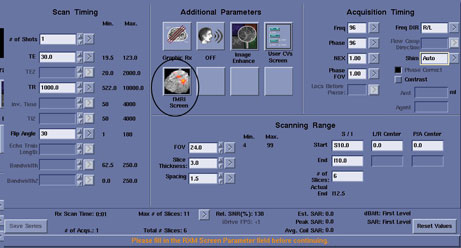
Click [fMRI Screen] under Additional Parameters.Illustration 13 appears. Select the [Research Mode] Paradigm. Click [Accept] and return to the setup screen.
Illustration 13: 14.x fMRI Parameters
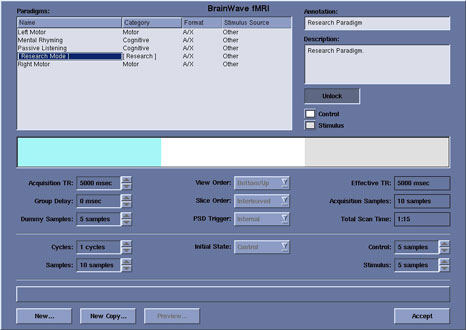
Enter the Scanning Range parameters shown in Illustration 12.
Click [Save Series].
Click [Auto Pre-Scan]. When the pre-scan is complete, click [Scan]. Scan Time marks the time remaining in the scan.
When the scan is complete, check the output from the communication test on the Stimulus PC. You should see:
A new pulse received number is 5
This verifies communication between the System Cabinet and the Stimulus PC.
The outputs from the Response Pads and the system trigger from the System Cabinet are routed through the Response System Electronics and then to the serial port of the Stimulus PC.
If the BrainWave hardware does not receive the trigger from the System Cabinet, the paradigms will not go past the ready state.
See Section 2.5.1, “No Trigger Response from Response Pad.”
Press <Shift+Esc>. This should exit PXE. When your tests are complete, double-click [Launch BrainWave PXE] on your desktop to restart PXE.
If this command does not work, complete the following steps to restart PXE manually.
Temporarily disable PXE.
At the StimPC console (which should display Idle), press <Esc>. This exits PXE.
| NOTE: | During this process, PXE may automatically restart. If this happens, press <Esc> to complete. |
Right-click [MX4_Monitor] (the icon looks like a magnifying glass) in the lower right corner of the Windows desktop. Select Show Monitor from the menu.
Uncheck the Monitor box, and click [Apply]. If PXE restarts, you may have to click [Apply] twice.
| NOTE: | DO NOT exit this application! If the Monitor window is in the way, right-click [MX4_Monitor] in the Windows Taskbar and select Hide Monitor from the menu. |
Click [Launch Paradigm Studio] or see the tutorial.
To re-enable PXE, check the Monitor box in the MX4 Monitor screen, and click [Apply].
PXE should start up in a few seconds and you should see Idle displayed on the screen.
When PXE is enabled, it is safe to turn off the monitor. Do not enable any screen savers or power save options.
Verify the network connection between the Stimulus PC and host by “pinging.”
| NOTE: | Prior to performing Network Troubleshooting, disable the Firewall on the Stimulus PC. |
Move the mouse to the Windows Taskbar in the lower right corner of the screen. Click the red shield icon to launch the Security Center. Click [Windows Firewall]. Select Off to disable the firewall.
From the Stimulus PC, move the mouse to the lower left corner of the screen. Go to Start → Command Prompt.
Type ping 10.0.1.1 or the IP address of the tgate site. Find the tgate site by going to the Host PC and follow these steps:
Open a C shell.
Type cd /etc.
Type more hosts. You may need to press <Space> to view the complete list of hosts.
Note the address of b5-tgate (where b5 is the network name of the system).
If the ping is successful (or has 0% loss), network communication is fine.
From a C shell on the Host PC, note the IP address for gestimpc from Step 3-C.
Type ping 10.0.1.9 (or the address of gestimpc). After a few seconds, press <Control+c> to stop the process. There should be 0% loss.
Make sure the IP address of the Stimulus PC matches that listed in etc/hosts for gestimpc. The default is 10.0.1.9. If this address is different from the default, go to /export/home/signa/brainwave/config/BrainWave.config to confirm that the IP address is the same. The first line of the config file needs to be the NUMERICAL IP address of the Stimulus PC (not the host name gestimpc). Edit if necessary.
Enable the Windows Firewall. Reverse the process in Step 1.
From Stimulus PC, move the mouse to the lower left corner of the screen. Click Start → Programs → Command Prompt.
Type ping b5-tgate (where b5 is the IP address of the system). Check /etc/hosts on the scanner for the IP address. If you cannot ping the host, there are network issues. Verify continuity of network cables. Verify proper Hub operation.
From host PC, open a C shell. Change directory cd /etc. Type more hosts.
Type ping 10.0.1.9 (or the address associated with gestimpc in /etc/hosts. The ping command should be successful.
Insert the DQA coil in the head coil, and landmark on the center.
Perform localizer scan with these parameters:
Patient Position: Supine
Patient Entry: Head first
Plane: 3-Plane (majority of parameters will fill in automatically)
FOV: 23.4
Slice Thickness: 5
Click [Save Series] to begin scan.
Click [New Series] after scan is complete.
Perform the Structural Scan using this protocol:
Patient Position: Supine
Patient Entry: Head first
Coil: Head
Series Description: Structural
Plane: Axial
Mode: 3D
Pulse Sequence Family: Gradient Echo
Pulse Seq: SPGR
Imaging Options: VBw (not needed for version 12.x or 14.x software)
Psd Name: -blank-
Protocol: -blank-
Scan timing
TR: 30ms
TE: Min Full
Flip Angle: 45
Bandwidth: 15.63
# of Echoes: 1
Acquisition timing
Frequency: 256
Phase: 192
NEX: 1
P FOV: 0.75
Freq DIR: A / P
A C F: Water
Scanning range:
FOV: 24
S Tk: 1.2
# Slices: 68
Start Location: S33
End Location: I33
Using the graphic prescription on a coronal image from the localizer series and scan.
Click [Graphic Rx]. using the cursor, center the block over the coronal image (Illustration 14). Click the [x] in the upper left position when finished to close the window.
Illustration 14: Centering the Block Over the Coronal Image
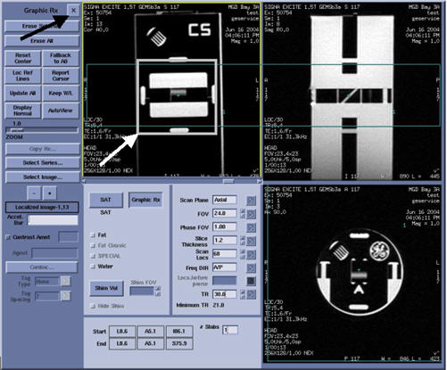
Click [Save Series], and then click [Download]. Select [Auto-Prescan]. Select [Scan].
Perform the fMRI scan using the following protocol
Perform the Functional Scan using this protocol:
Patient Position: Supine
Patient Entry: Head first
Coil: Head
Series Description: Activation
Plane: Axial
Mode: 2D
Pulse Seq: Gradient Echo EPI
Imaging Options: fMRI
Psd Name: n/a
Protocol: -blank-
Scan timing
TR: 4000ms
TE: 40ms
Flip Angle: 90
Bandwidth: 62.50
# of Echoes: 1
Acquisition timing
Frequency: 64
Phase: 64
NEX: 1
P FOV: 1.00
Freq DIR: R / L
A C F: Water
Scanning range:
FOV: 24
S Tk: 3.0
Spac: 0.0
# Slices: 23
User CVs:
CV 3 dummy acqs: 4.0
CV 6 initial state: 0.0
CV 7 baseline dur: 6.0
CV 8 stim dur: 6.0
CV 9 scan dur: 96.00
Click [New Series]. Select [Patient Position].
Select [fMRI] and select [Right Motor] (hardware or software depending on the availability of BrainWave hardware) for Paradigm in the fMRI sub-panel. SeeIllustration 15 for 14.x systems, orIllustration 16 for 11.x and 12.x systems.
Illustration 15: 14.x Right-Motor fMRI Settings
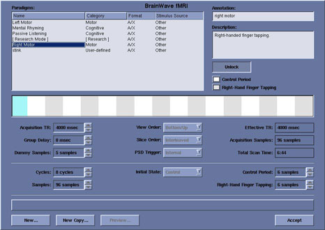
Illustration 16: 11.x/12.x Right-Motor fMRI Settings
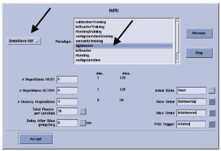
Click [Graphic Rx]. Click in the circled position shown inIllustration 17 and type to produce 23 images. Make sure the prescribed images are centered as shown.
Illustration 17: Setting the Number of Images
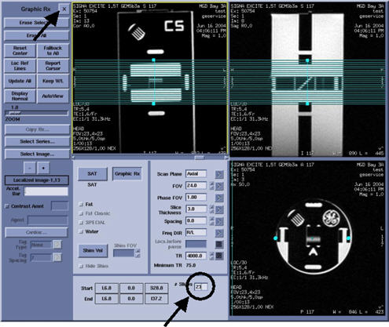
Click [Save Series]. Click [Download].
Right-click [Research Operations] and select Display CVs from the menu. Select the RTIP_test CV and change [Current Value] from 0 to 1. This causes the epi PSD to simulate BOLD activity by switching flip angle between prescribed rest and activation states, resulting in whole phantom activation during the following tests. Right-click [Research Operations] again and select Download from the menu to apply the CV value change during scanning.
Click [Prep Scan]. The BrainWaveRT control panel should become visible upon successful completion of the prescan. In version 12.x, [Scan] should be disabled. In v14.x, [Scan] will be active. Press Start Scan on the keyboard to begin the scan.
Select [Browser], and then select the fMRI exam to be processed. Click [BrainWave]. The panel (Illustration 18) should appear.
Illustration 18: BrainWavePA Browser Panel
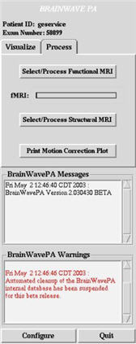
Select the Process tab.
Click [Select/Process Structural MRI]. Observe the popup panel instructing the user to select a structural dataset in the display browser. Select the Non-Segmented, Structural Series and click [Segment] on the popup panel. The Processing Status panel (Illustration 19) should appear, with a text description of the processing being performed, and a progress bar showing activity. Upon completion, the progress bar is completely filled in and the message at the top of the Processing Status panel says No current image processing.
Illustration 19: Scan Processing Progress
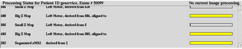
Click [Select/Process Functional MRI]. Select the Functional Series, and click [Process].
Click [Select/Process Functional MRI]. Select the Functional Series, and click [Process]. A message will appear in the upper right section of the screen indicating Smoothing fMRI scans.Illustration 20 appears.
Illustration 20: Plotting and Smoothing fMRI Scans
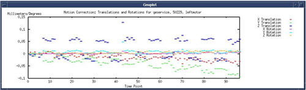
Click [Quit] to exit BrainWavePA. View the resulting segmented images in the display browser. The newly segmented series produced should have the same number of images as the original dataset. This indicates that the BrainWave scan was successful.
The default settings for the Lumina Controller are:
Baud Rate: 9600
ASCII/MEDx: See Diagram
Illustration 21: Lumina Controller Box
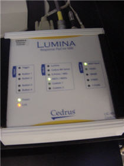
Initially the video output of the Stimulus PC is connected directly to the monitor in the BrainWave cabinet. The customer may place their video stimulator between the PC and the monitor. If there is no video on the monitor, you can bypass the customer’s equipment. If problems remain, you can use the video output of your laptop to verify operation of the monitor.